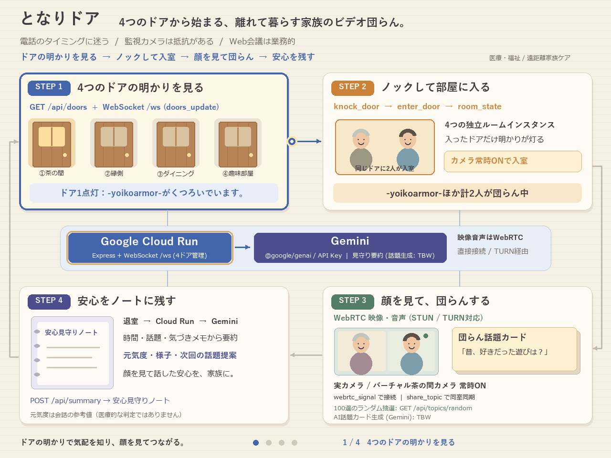

チーム情報
アプリケーション名
GitHub リポジトリ URL：https://github.com/yoikoarmor/GDG-hackathon
「となりドア」は、離れて暮らす親や祖父母の様子が気になる家族が、「今、声をかけてもいいタイミングか」をドア越しの温かい気配で知り、ノックしてドアを開けるだけで顔を見ながら自然な団らんができるWebアプリケーションです。
親・祖父母側の様子（カメラの静止画1枚やひとこと状況）を Gemini 2.5 Flash が解析し、生の監視映像を送るのではなく 「-おばあちゃん-がくつろいでいます。」（声かけタイミング：◎） という優しい気配に変換してドアの明かりとして伝えます。ドアを開けて入室すると、あえてビデオ通話を常時ONにする団らん空間に繋がり、100選＋Geminiリアルタイム生成の「話題カード」や退室後の「安心見守りレポート」によって、離れて暮らす家族の孤立防止と継続的な見守りを実現します。
離れて暮らす親や祖父母の様子が気になっていても、毎日訪ねたり電話したりするのには3つの大きな障壁があります。第一に「今忙しいかな？」「特別な用事がないとかけづらい」という声をかけるタイミングの迷い、第二に室内カメラに対する「監視されているようで嫌だ」というプライバシー上の拒否感、第三にZoom等のWeb会議ツールの「業務的で予定調整が必要」という心理的ハードルおよび音声通話だけでは顔色・元気さが分からない限界です。本プロジェクトでは、「ドア越しの気配で声をかけるタイミングがわかること」と「あえてビデオ通話を強制するビデオ会議の団らん化」によってこれらの課題を解決します。
| 観点 | 従来の手法（電話・見守りカメラ・Zoom等） | となりドア |
|---|---|---|
| 声をかけるタイミングの把握 | 相手が今どういう状態か分からず、電話をかけるのを躊躇してしまう | ドアの明かりと「-アカウント名-がくつろいでいます。」の表示、Geminiの判定（◎/○/△）で一目で分かる |
| プライバシーへの配慮 | 見守りカメラは生映像を常時配信するため監視感が強い | カメラ画像はGeminiが「気配のひとこと」に抽象化した後に即時破棄し、生映像は保存・配信しない |
| 通話空間の体験（団らん化） | Zoom等は業務的でURL共有が必要。用件がないと沈黙しがち | 木目と暖簾の「ドア」をノックして入り、100選＋Gemini生成の「話題カード」で自然に会話が弾む |
| 相手の様子・顔色の確認 | 音声電話だけでは顔色や元気さが分からず心配が残る | あえてビデオ通話を強制（実カメラ／バーチャル茶の間カメラ常時ON）し、顔を見て安心できる |
| 通話後の家族間共有 | 通話した本人しか親の様子が分からない | 退室時にGeminiが「安心見守りレポート（元気度・様子・次回の話題）」を自動生成し家族で共有できる |
| 使用技術 | 使用箇所 | 選定理由・メリット | デメリット |
|---|---|---|---|
| Gemini API ( gemini-2.5-flash / @google/genai) |
①ドア越しの気配・声かけタイミング判定 ②団らん話題カード生成 ③退室後の安心見守りレポート生成 |
画像とテキストを高速にマルチモーダル理解でき、JSONスキーマ指定によりUI表示用の構造化データを安定して生成できる | API利用料金やレート制限、応答遅延への配慮（ローカル100選デッキへのフォールバック）が必要 |
| Cloud Run | Webフロントエンド配信、REST API、WebSocketシグナリングサーバー（/ws）のホスティング |
単一コンテナで静的配信・AI API呼び出し・WebSocket常時接続・自動SSL（https://）を統合でき運用負担が小さい |
インメモリで部屋状態を共有するため、セッションアフィニティやインスタンス数制御への配慮が必要 |
| Google STUN ( stun.l.google.com) |
別ネットワーク間のWebRTCビデオ通話（P2P接続確立） | 映像・音声をサーバー中継せずブラウザ間で直接通信でき、低遅延かつプライバシー性が高い | 厳格なキャリアNAT環境ではTURNサーバーが別途必要になる場合がある |
| Cloud Secret Manager | GEMINI_API_KEY の安全な管理・注入 |
APIキーをクライアントやGitに露出させずサーバー内部のみで利用できる | デプロイ時にIAM権限の設定が必要 |
本プロジェクトでは、限られた開発期間内に「カメラ・マイク必須のWebRTCビデオ通話」「ドアの気配や話題カードをリアルタイム同期するWebSocket通信」「カメラ画像を外部に保存せず気配へ抽象化するAI処理」の3つを統合する必要がありました。
Cloud Run を採用することで、WebRTCのカメラ取得に必須となる https://（自動SSL証明書）と WebSocket 常時接続、さらにサーバーサイドでの GEMINI_API_KEY 秘匿を単一コンテナで実現し、インフラ構築時間を大幅に削減しました。また、視覚情報と状況メモから素早く「声かけタイミング」と「団らんの話題」を生成する中核AIとして、マルチモーダル性能と低遅延を兼ね備えた Gemini 2.5 Flash を選定しました。

アプリケーションURL：https://tonari-door-danran-xxxxxxxxxx-an.a.run.app （※Cloud Run 発行URLを記載）
| 項目 | 内容 |
|---|---|
| アプリケーションURL | 上記アプリケーションURL（1台PCデモ用URL：/?door=chanoma&cam=virtual） |
| 初期アカウント名（子・孫側） | yoikoarmor または kaigunn_2020（画面上部で自由に入力・変更可能） |
| 初期アカウント名（親・実家側） | おばあちゃん / 母（実家）（1人操作時は自動で家族シミュレーターが応答） |
| パスワード | 不要（高齢者でも迷わずワンタップで入室できる設計のためログイン不要） |
初期状態で以下のドア気配データおよび100件の話題カードデッキ（public/data/topics.json）を搭載しています。
| # | 機能 | 内容 |
|---|---|---|
| 1 | ドア越しの気配表示 | 生映像で監視するのではなく、ドアの明かりと「-アカウント名-がくつろいでいます。」のプレート表示で声をかけるタイミングを伝えます。 |
| 2 | Gemini 声かけタイミング解析 | カメラの静止画1枚と状況メモから、Gemini 2.5 Flash が声かけタイミング度（◎/○/△）と一言コメントを生成します（生画像は即時破棄）。 |
| 3 | ビデオ通話強制の団らんルーム | 相手の顔色や様子を自然に確認できるよう、入室時は実カメラまたは「🍵 バーチャル茶の間カメラ」の常時ONを必須としています。 |
| 4 | 団らん話題カード（100選＋Gemini生成） | 100件の初期カードからのランダム抽選・カテゴリ絞り込みと、Gemini 2.5 Flash によるリアルタイム話題生成・同室者への同期を行います。 |
| 5 | 安心見守りレポート＆ノート | 退室時に団らん時間・話題・気づきメモから Gemini が元気度・様子・次回の話題提案をまとめ、見守りノートに保存します。 |
本プロジェクトでは、アプリケーション開発とサービス機能の両面でAIを活用しました。
API_CONTRACT.md）と100件の話題データを先に定義した上で、バックエンド・Cloud Run設計およびパイプラインGIF生成に Codex CLI、木目と暖簾のドアUI・バーチャルカメラ実装に Claude Code CLI を活用しました。AIが生成したコードはそのまま採用せず、自動スモークテスト（server/smokeTest.js）と結合監査を実施し、複数ドア間の気配重複や2タブ同期の不整合を人間と統括エージェントで検証・修正しました。開発を通して、以下の3つの大きな学びと成長を得ることができました。
初期在室者・バーチャル映像はデモであり、実在者の顔色・安否を示しません。要約は時間・話題・参加者・任意メモから作り、通話映像・音声は解析しません。AI失敗時やメモのない場合の元気度は未評価です。
現状は認証なし・インメモリ共有のデモです。家族単位の認可、永続化、TURNは未実装です。Cloud Runの単一インスタンスで使用し、実デプロイURLと2端末での接続を提出前に確認してください。URL欄は現時点でプレースホルダーです。